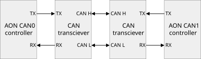

Controller Area Network (CAN)#
Applies to: Jetson AGX Orin, Jetson Orin NX and Jetson Orin Nano series.
This topic describes the Time Triggered CAN (TTCAN) controller on the Always-On block of the NVIDIA SoC, and how to use it in user space.
Important Features#
The Time Triggered CAN controller has several important features:
It supports standard and extended frame transmission.
Its CAN bus bit rate can be configured from 10 kbps to 1 Mbps.
It supports CAN FD mode with a maximum data bit rate of 15 Mbps. All types of transceivers can achieve a 5 Mbps data bit rate.
It can deliver higher data bit rates if you configure the TDCR (Transmission Delay Compensation Register) through its user space sysfs node.
Jetson Platform Details#
The following table shows details of the CAN implementation on each supported platform.
| Property | Jetson Orin NX and Nano | Jetson AGX Orin |
|---|---|---|
| Number of controllers | 1 | 2 |
| Controller base address | mttcan@c310000 |
mttcan@c310000 mttcan@c320000
|
| Pins on Jetson carrier board |
J17: CAN_RX: [1] CAN_TX: [2]
|
J30 (40-pin header): CAN0_DIN: [29] CAN0_DOUT: [31] CAN1_DIN: [37] CAN1_DOUT: [33]
|
Pinmux can0_din |
Addr: 0x0c303018 Value: 0xc458
|
Addr: 0x0c303018 Value: 0xc458
|
Pinmux can0_dout |
Addr: 0x0c303010 Value: 0xc400
|
Addr: 0x0c303010 Value: 0xc400
|
Pinmux can1_din |
n/a |
Addr: 0x0c303008 Value: 0xc458
|
Pinmux can1_dout |
n/a |
Addr: 0x0c303000 Value: 0xc400
|
| Default pin configuration | SFIO: CAN functionality | GPIO |
Enabling CAN#
The interface from an NVIDIA® Jetson™ device to CAN requires a transceiver that supports a minimum of 3.3 V and a transfer rate based on the Jetson platform’s specifications. See the section Important Features for details.
NVIDIA recommends the WaveShare SN65HVD230 CAN board for development systems. Your choice of transceiver for production devices depends on your application’s requirements.
Make the following connections from the transceiver to the Jetson carrier board:
Transceiver Rx to Jetson
CAN_RXTransceiver Tx to Jetson
CAN_TXTransceiver VCC to Jetson 3.3V pin
Transceiver GND to Jetson
GNDpin
This diagram shows an example of a correct connection:

Kernel DTB#
mttcan@c310000 {
status = "okay";
};
mttcan@c320000 {
status = "okay";
};
Pinmux#
Make sure that the pinmux register settings are applied as shown by the table in the section Jetson Platform Details.
Pinmux can be updated in several ways:
Use a BusyBox devmem tool to write to hardware registers. Changes will persist only until the system is rebooted.
Enter this command to install BusyBox:
$ sudo apt-get install busybox
This example writes the value
0x458to register address0x0c303020:$ busybox devmem 0x0c303020 w 0x458
Update the respective platform pinmux configuration files and flash the updated files.
See Running Jetson-IO, in the topic Configuring the Jetson Expansion Headers, for information about how to enable pins.
Kernel Drivers#
Load all of the necessary CAN kernel drivers in the order shown.
To load the CAN kernel drivers#
Insert the CAN BUS subsystem support module:
$ modprobe can
Insert the raw CAN protocol module (CAN-ID filtering):
$ modprobe can_raw
Add real CAN interface support (for Jetson, mttcan):
$ modprobe mttcan
Managing the Network#
To use the network, you must first bring up CAN devices on the network and install a group of CAN utilities to use for testing. Then you can transfer packets and debug the network interface if necessary.
To set the interface properties#
These example commands set the network interface to use FD (Flexible Data) mode with a bus bit rate of 500 kbps and a data bit rate of 1 Mbps, enter the commands:
$ ip link set can0 up type can bitrate 500000 dbitrate 1000000 berr-reporting on fd on $ ip link set can1 up type can bitrate 500000 dbitrate 1000000 berr-reporting on fd on
To install the CAN utilities#
Enter the command:
$ sudo apt-get install can-utils
To transfer packets#
This example command transfers a packet to
can0with CAN ID 123 and data ‘abcdabcd’:$ cansend can0 123#abcdabcd
This example command receives a packet from any CAN node connected to the bus:
$ candump -x any &
This example command transfers an FD frame to can0 with CAN ID 123, flag bit 1, and data ‘abcdabcd’:
$ cansend can0 123##1abcdabcd
For more information about the use of cansend, enter this command:
$ cansend --help
You can use other tools, such as cangen, for different filtering options.
Debug Methods#
This section discusses methods of debugging CAN network problems.
Loopback test#
You can perform a loopback test to determine whether the controller is working.
To perform a loopback test, enable the CAN drivers. (For more information, refer to Kernel Drivers.)
$ ip link set can0 type can bitrate 500000 loopback on $ ip link set can0 up $ candump can0 & $ cansend can0 123#abcdabcd
If the loopback test is successful, the last command displays this:
can0 123 [4] AB CD AB CD
can0 123 [4] AB CD AB CD
Other Methods#
Several other debugging techniques may be useful in appropriate cases:
If a loopback test shows that the controller is working correctly and you are still not able to send or receive packets, try reconnecting the transceiver and confirm that the connections are correctly made.
Check whether all of the steps necessary to enable CAN were done properly.
Connect an oscilloscope and see whether the bus is behaving properly.
If the device logs a “No buffer space available” message during send, enter this command to use the polling mechanism:
$ cangen -L 8 can0 -p 1000
Obtaining Higher Bit Rates#
You can obtain higher data bit rates by configuring the TDCR (Transmission Delay Compensation Register) through its user space sysfs node.
Make sure that the transceiver being used is able to support higher bit rates.
To configure the TDCR for higher bit rates#
Enter the command:
$ echo 0x600 > /sys/devices/c320000.mttcan/net/can1/tdcr
Bring up the CAN interface on the network and transfer packets. See Managing the Network for more information.
Changing the CAN Clock Rate#
The mttcan kernel driver sets the CAN clock rate. Follow the instructions in Obtaining the Kernel Sources with Git in the topic Kernel Customization to obtain kernel source code. Update the clock rate in the mttcan driver as in this code snippet:
.set_can_core_clk = true,
.can_core_clk_rate = 50000000, // modify here (in Hz)
.can_clk_rate = 200000000, // four times of core clock rate
The default CAN clock rates are as follows:
Jetson™ Orin (AGX, NX and Nano) product family: 50 MHz